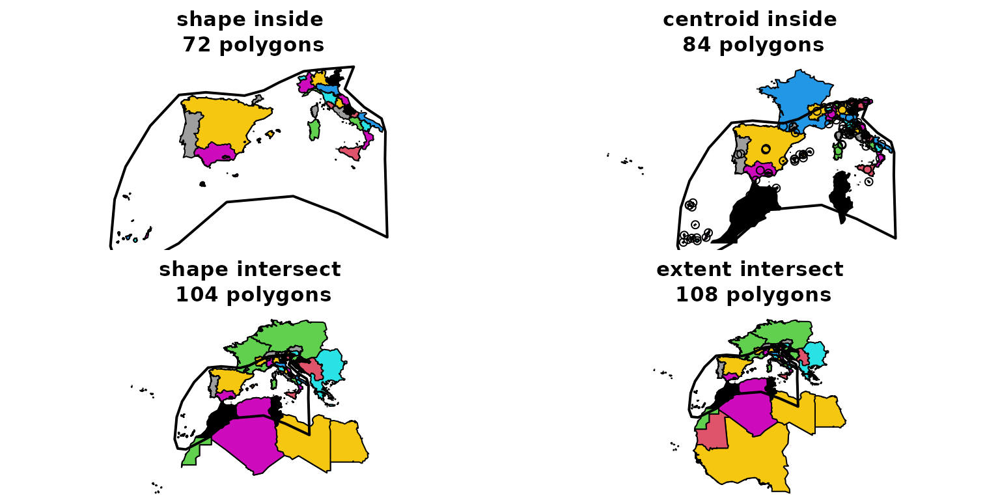
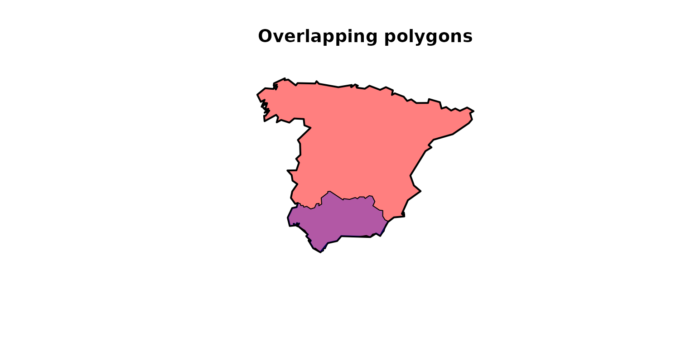
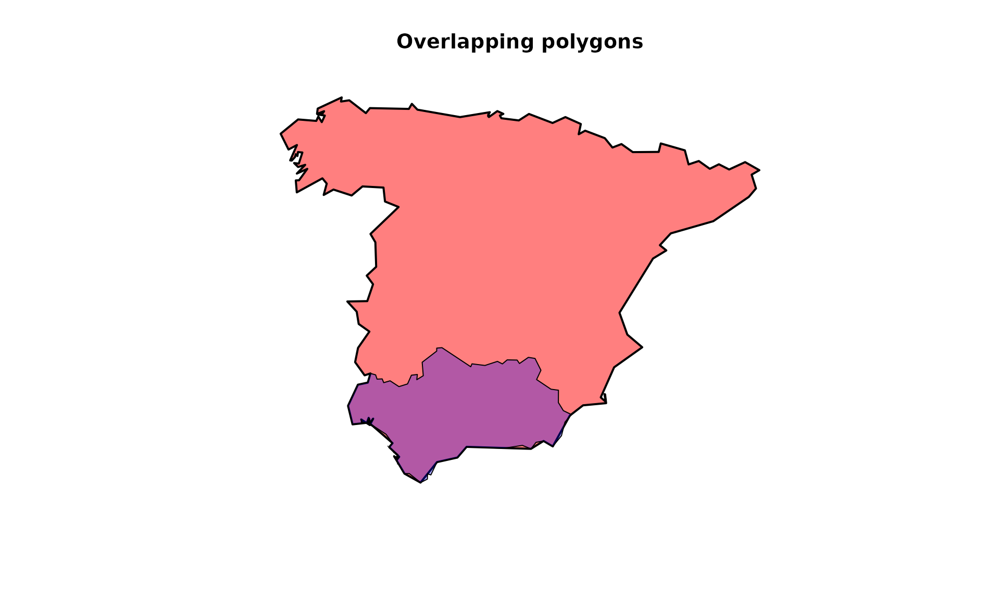

GIFT tutorial for advanced users
Pierre Denelle & Patrick Weigelt
2023-03-08
Source:vignettes/GIFT_advanced_users.Rmd
GIFT_advanced_users.RmdThis vignette documents some functions and specificities that were not presented in the main vignette of the package. It is mainly targeted for advanced users of the GIFT database.
1. Versions and metadata for checklists
In all the functions from the package, there is a
version argument. This argument allows for retrieving
different instances of the GIFT database and therefore make all previous
studies using the GIFT database reproducible. For example, the version
used in (Weigelt, König, and Kreft 2020)
is "1.0". To get more information about the content of the
different versions, you can go here and click on the
tab Version Log.
To access all the available versions of the database, you can run the following function:
versions <- GIFT_versions()
kable(versions, "html") %>%
kable_styling(full_width = FALSE)| ID | version | description |
|---|---|---|
| 1 | 1.0 | Data included in and workflows used to assemble GIFT 1.0 are described in detail in: Weigelt, P., König, C. & Kreft, H. (2020) GIFT – A Global Inventory of Floras and Traits for macroecology and biogeography. Journal of Biogeography, 47, 16-43. doi: 10.1111/jbi.13623 |
| 2 | 2.0 | New checklist and trait data included for Europe, the Mediterranean, temperate Asia, Panama, Japan, Java, New Zealand, Easter Island and the Torres Strait Islands. Updated workflows to document biases in the distribution of trait data; Updated taxonomic trait derivation; Final trait values and agreement scores for trait values from several resources are now calculated separately including and excluding restricted resources. |
| 3 | 2.1 | New checklists and traits included for the Americas, Crimea, Madagascar, Arabian peninsula, Laos, Bhutan, India, China, Sunda-Sahul shelf, Tonga, Canary Islands, West Africa and for ferns and palms globally. Large categorical trait data included from Try. |
| 4 | 2.2 | New checklists (with a focus on endemic species) and traits for various oceanic archipelagos (Cook Islands, Madeira, Arctic Islands, Cayman Islands, Comores, Juan Fernandez, Palau, Galapagos, Frisian Islands, Antilles, Japan, Mayotte, Fiji, Taiwan, etc.) and various mainland regions (Equatorial Guinea and the entire former USSR in sub-regions). |
The column version of this table is the one to use when
you want to retrieve past versions of the GIFT database. By default, the
argument used is GIFT_version = "latest" which leads to the
current latest stable version of the database (“2.0” in October
2022).
The function GIFT_lists() can be run to retrieve
metadata about the GIFT checklists. In the next chunk, we call it with
different values for the GIFT_version argument.
list_latest <- GIFT_lists(GIFT_version = "latest") # default value
list_1 <- GIFT_lists(GIFT_version = "1.0")The number of checklists available was 3122 in the version 1.0 and equals 4475 in the version 2.0.
2. References
When using GIFT database in a research article, it is a good practice
to cite the references used, and list them in an Appendix. The following
function retrieves the reference for each checklist, as well as some
metadata. References are documented in the column
ref_long.
ref <- GIFT_references()
# 3 first rows of that table
kable(ref[1:3, c("ref_ID", "ref_long", "geo_entity_ref")], "html") %>%
kable_styling(full_width = FALSE)| ref_ID | ref_long | geo_entity_ref |
|---|---|---|
| 1 | Kenneally (1993) Ashmore Reef and Cartier Island. Available at: http://www.environment.gov.au/biodiversity/abrs/online-resources/flora/50/index.html, last accessed 6 April 2011. | Ashmore Reef and Cartier Island |
| 2 | Christmas Island National Park (2002) Third Christmas Island national park management plan. Parks Australia North, Christmas Island, Australia, 175p. | Christmas Island National Park |
| 3 | Du Puy (1993) Christmas Island. Available at: http://www.anbg.gov.au/abrs/online-resources/flora/, last accessed 6 April 2011. | Christmas Island |
3. Checklist data
The main wrapper function to retrieve checklists and their species
composition is GIFT_checklists() but you also have the
possibility to retrieve individual checklists using
GIFT_checklists_raw(). You would need to know the
identification number list_ID of the checklists you want to
retrieve.
To quickly see all the list_ID available in
the database, you can run:
gift_lists <- GIFT_lists()
length(unique(gift_lists$list_ID))## [1] 4475
When calling GIFT_checklists_raw(), you can set the
argument namesmatched to TRUE in order to get
extra columns informing about the taxonomic harmonization that was
performed when uploading the list to GIFT database.
listID_1 <- GIFT_checklists_raw(list_ID = c(11926))
listID_1_tax <- GIFT_checklists_raw(list_ID = c(11926), namesmatched = TRUE)## [1] 16## [1] 33## [1] 1106## [1] 1331In the list we called, you can see that we “lost” some species after
taxonomic harmonization as we went from 1331 in the source to 1106 after
the taxonomic harmonization. This means that several species were
considered as synonyms or unknown plant species in the taxonomic
backbone used for harmonization.
Note: the service mainly
used to taxonomically harmonize the species’ names was The
Plant List up to version 2.0 and World checklist of Vascular Plants
afterwards.
4. Spatial subset
In the main vignette, we illustrated how to retrieve checklists that were falling into a provided shapefile, using the western Mediterranean basin provided with the GIFT R package.
data("western_mediterranean")We here provide more details on the different values the
overlap argument can take, using the function
GIFT_spatial(). The following figure illustrates how this
argument works:
Figure 1. GIFT spatial
We now illustrate this by retrieving checklists falling in the western Mediterranean basin using the four options available.
med_centroid_inside <- GIFT_spatial(shp = western_mediterranean,
overlap = "centroid_inside")
med_extent_intersect <- GIFT_spatial(shp = western_mediterranean,
overlap = "extent_intersect")
med_shape_intersect <- GIFT_spatial(shp = western_mediterranean,
overlap = "shape_intersect")
med_shape_inside <- GIFT_spatial(shp = western_mediterranean,
overlap = "shape_inside")
length(unique(med_extent_intersect$entity_ID))## [1] 108## [1] 104## [1] 84## [1] 72We here see that we progressively lose lists as we apply more
selective criterion on the spatial overlap. The most restrictive option
being overlap = "shape_inside" and the less restrictive one
being overlap = "extent_intersect".
Using the
functions GIFT_shapes() and calling it for the entity_IDs
retrieved in each instance, we can download the shapefiles for each
region.
geodata_extent_intersect <- GIFT_shapes(med_extent_intersect$entity_ID)
geodata_shape_inside <-
geodata_extent_intersect[which(geodata_extent_intersect$entity_ID %in%
med_shape_inside$entity_ID), ]
geodata_centroid_inside <-
geodata_extent_intersect[which(geodata_extent_intersect$entity_ID %in%
med_centroid_inside$entity_ID), ]
geodata_shape_intersect <-
geodata_extent_intersect[which(geodata_extent_intersect$entity_ID %in%
med_shape_intersect$entity_ID), ]And then make a map.
par(mfrow = c(2, 2), mai = c(0, 0, 0.5, 0))
plot(sf::st_geometry(geodata_shape_inside),
col = geodata_shape_inside$entity_ID,
main = paste("shape inside\n",
length(unique(med_shape_inside$entity_ID)),
"polygons"))
plot(sf::st_geometry(western_mediterranean), lwd = 2, add = TRUE)
plot(sf::st_geometry(geodata_centroid_inside),
col = geodata_centroid_inside$entity_ID,
main = paste("centroid inside\n",
length(unique(med_centroid_inside$entity_ID)),
"polygons"))
points(geodata_centroid_inside$point_x, geodata_centroid_inside$point_y)
plot(sf::st_geometry(western_mediterranean), lwd = 2, add = TRUE)
plot(sf::st_geometry(geodata_shape_intersect),
col = geodata_shape_intersect$entity_ID,
main = paste("shape intersect\n",
length(unique(med_shape_intersect$entity_ID)),
"polygons"))
plot(sf::st_geometry(western_mediterranean), lwd = 2, add = TRUE)
plot(sf::st_geometry(geodata_extent_intersect),
col = geodata_extent_intersect$entity_ID,
main = paste("extent intersect\n",
length(unique(med_extent_intersect$entity_ID)),
"polygons"))
plot(sf::st_geometry(western_mediterranean), lwd = 2, add = TRUE)
5. Remove overlapping regions
GIFT comprises many polygons and for some regions, there are several polygons overlapping. How to remove overlapping polygons and the associated parameters are two things detailed in the main vignette. We here provide further details:
length(med_shape_inside$entity_ID)## [1] 72
length(GIFT_no_overlap(med_shape_inside$entity_ID, area_threshold_island = 0,
area_threshold_mainland = 100, overlap_threshold = 0.1))## [1] 53
# The following polygons are overlapping:
GIFT_no_overlap(med_shape_inside$entity_ID, area_threshold_island = 0,
area_threshold_mainland = 100, overlap_threshold = 0.1)## [1] 145 146 147 148 149 150 151 414 415 416 417 547
## [13] 548 549 550 551 552 586 591 592 736 738 739 10001
## [25] 10072 10104 10184 10303 10422 10430 10978 11029 11030 11031 11033 11035
## [37] 11038 11039 11042 11044 11045 11046 11434 11474 11477 11503 12231 12232
## [49] 12233 12632 12633 12634 12635
# Example of two overlapping polygons: Spain mainland and Andalusia
overlap_shape <- GIFT_shapes(entity_ID = c(10071, 12078))## ================================================================================
par(mfrow = c(1, 1))
plot(sf::st_geometry(overlap_shape),
col = c(rgb(red = 1, green = 0, blue = 0, alpha = 0.5),
rgb(red = 0, green = 0, blue = 1, alpha = 0.3)),
lwd = c(2, 1),
main = "Overlapping polygons")
GIFT_no_overlap(c(10071, 12078), area_threshold_island = 0,
area_threshold_mainland = 100, overlap_threshold = 0.1)## [1] 12078
GIFT_no_overlap(c(10071, 12078), area_threshold_island = 0,
area_threshold_mainland = 100000, overlap_threshold = 0.1)## [1] 100715.2. By ref_ID
In GIFT_checklists(), there is also the possibility to
remove overlapping polygons only if they belong to the same reference
(i.e. same ref_ID).
We show how this works with the following example:
ex <- GIFT_checklists(taxon_name = "Tracheophyta", by_ref_ID = FALSE,
list_set_only = TRUE)
ex2 <- GIFT_checklists(taxon_name = "Tracheophyta",
remove_overlap = TRUE, by_ref_ID = TRUE,
list_set_only = TRUE)
ex3 <- GIFT_checklists(taxon_name = "Tracheophyta",
remove_overlap = TRUE, by_ref_ID = FALSE,
list_set_only = TRUE)
length(unique(ex$lists$ref_ID))## [1] 367## [1] 360## [1] 335Asking for checklists of vascular plants, we get 367 checklists
without any overlapping criterion, 335 if we remove overlapping polygons
and 360 if we remove overlapping polygons at the reference level.
So what is the difference between the second and third case?
Let’s look at the checklists that are present in the second but not in
the third example.
## [1] 4 151 184 242 10034 10079 10118 10141 10143 10170 10171 10173
## [13] 10194 10212 10216 10249 10266 10283 10304 10306 10317 10329 10334 10358
## [25] 10616If we look at the ref_ID = 10143, we see that it is a
checklist for the Pilbara region in Australia. Its
entity_ID is 10043. Looking at the GIFT website, we see
that other regions can overlap with it.
# Pilbara region Australy and overlapping shapes
pilbara <- GIFT_shapes(entity_ID = c(10043, 12172, 11398, 11391, 10918))## ================================================================================
ggplot(pilbara) +
geom_sf(aes(fill = as.factor(entity_ID)), alpha = 0.5) +
scale_fill_brewer("entity_ID", palette = "Set1")
Since these polygons do not belong to the same ref_ID,
they are kept when by_ref_ID = TRUE but are not considered
when by_ref_ID = FALSE.
6. Species
All the plant species present in GIFT database can be retrieved using
GIFT_species(). To add additional information, like their
order or family, we can call GIFT_taxgroup().
species <- GIFT_species()
# Add Family
species$Family <- GIFT_taxgroup(
as.numeric(species$work_ID), taxon_lvl = "family", return_ID = FALSE,
species = species)
kable(species[1:5, ], "html") %>%
kable_styling(full_width = FALSE)| work_ID | genus_ID | work_genus | work_species | work_author | Family |
|---|---|---|---|---|---|
| 1 | 950 | Aaronsohnia | Aaronsohnia pubescens | NA | Asteraceae |
| 2 | 951 | Abacopteris | Abacopteris lineata | NA | Thelypteridaceae |
| 3 | 952 | Abarema | Abarema abbottii | NA | Fabaceae |
| 4 | 952 | Abarema | Abarema alexandri | NA | Fabaceae |
| 5 | 952 | Abarema | Abarema asplenifolia | NA | Fabaceae |
GIFT_taxgroup(as.numeric(species$work_ID[1:5]), taxon_lvl = "order",
return_ID = FALSE)## [1] "Asterales" "Polypodiales" "Fabales" "Fabales" "Fabales"
GIFT_taxgroup(as.numeric(species$work_ID[1:5]),
taxon_lvl = "higher_lvl", return_ID = FALSE,
species = species)## [1] "Angiospermae" "Monilophyta" "Angiospermae" "Angiospermae" "Angiospermae"As said above, plant species names can vary from the original sources
they come from to the final work_species name they get, due
to the taxonomic harmonization procedure. Looking-up for a species and
the different steps of the taxonomic harmonization is possible with the
function GIFT_species_lookup().
Fagus <- GIFT_species_lookup(genus = "Fagus", epithet = "sylvatica",
namesmatched = TRUE)
kable(Fagus[1:5, ], "html") %>%
kable_styling(full_width = FALSE)| orig_ID | orig_genus | name_ID | cf_genus | genus | cf_species | aff_species | species_epithet | subtaxon | author | matched | epithetscore | overallscore | resolved | synonym | matched_subtaxon | accepted | service | work_ID | taxon_ID | work_genus | work_species_epithet | work_species | work_author |
|---|---|---|---|---|---|---|---|---|---|---|---|---|---|---|---|---|---|---|---|---|---|---|---|
| 59384 | Fagus | 29235 | 0 | Fagus | 0 | 0 | silvatica | NA | L. | 1 | 0.8888889 | 0.9444444 | 1 | NA | NA | NA | tpl | 18283 | 3288 | Fagus | sylvatica | Fagus sylvatica | NA |
| 10231 | Fagus | 29236 | 0 | Fagus | 0 | 0 | sylvatica | NA | NA | 1 | 1.0000000 | 0.8333333 | 1 | NA | NA | NA | tpl | 18283 | 3288 | Fagus | sylvatica | Fagus sylvatica | NA |
| 1393055 | Fagus | 29236 | 0 | Fagus | 0 | 0 | sylvatica | NA | NA | 1 | 1.0000000 | 0.8333333 | 1 | NA | NA | NA | tpl | 18283 | 3288 | Fagus | sylvatica | Fagus sylvatica | NA |
| 1395198 | Fagus | 29236 | 0 | Fagus | 0 | 0 | sylvatica | NA | NA | 1 | 1.0000000 | 0.8333333 | 1 | NA | NA | NA | tpl | 18283 | 3288 | Fagus | sylvatica | Fagus sylvatica | NA |
| 1395199 | Fagus | 29236 | 0 | Fagus | 0 | 0 | sylvatica | NA | NA | 1 | 1.0000000 | 0.8333333 | 1 | NA | NA | NA | tpl | 18283 | 3288 | Fagus | sylvatica | Fagus sylvatica | NA |
7. Taxonomy
The taxonomy used in GIFT database can be downloaded using
GIFT_taxonomy().
taxo <- GIFT_taxonomy()
kable(taxo[1:20, ], "html") %>%
kable_styling(full_width = FALSE)| taxon_ID | taxon_name | taxon_author | taxon_lvl | lft | rgt |
|---|---|---|---|---|---|
| 1 | Embryophyta | NA | level_1 | 1 | 39914 |
| 2 | Tracheophyta | NA | level_2 | 2 | 35965 |
| 3 | non-Tracheophyta | NA | level_2 | 35966 | 39911 |
| 4 | Pteridophyta | NA | level_3 | 3 | 1480 |
| 5 | Spermatophyta | NA | level_3 | 1481 | 35964 |
| 6 | Angiospermae | NA | level_4 | 1482 | 35749 |
| 7 | Gymnospermae | NA | level_4 | 35750 | 35963 |
| 8 | Mesangiosperms | NA | other | 1543 | 35748 |
| 9 | Magnoliids | NA | other | 34994 | 35747 |
| 10 | Monocots | NA | other | 28238 | 34993 |
| 11 | Eudicots | NA | other | 1562 | 28237 |
| 12 | Core_Eudicots | NA | other | 2259 | 28236 |
| 13 | Superrosids | NA | other | 17934 | 28235 |
| 14 | Rosids | NA | other | 18307 | 28234 |
| 15 | Superasterids | NA | other | 2312 | 17933 |
| 16 | Asterids | NA | other | 4729 | 17932 |
| 17 | Amborellales | Melikyan et al. | order | 1537 | 1542 |
| 18 | Nymphaeales | Salisb. ex Bercht. & J.Presl | order | 1501 | 1536 |
| 19 | Austrobaileyales | Takht. ex Reveal | order | 1483 | 1500 |
| 20 | Canellales | Cronq. | order | 35713 | 35746 |
8. Overlap_GloNAF tables (and others)
As other global databases of plant diversity exist and may rely on
different polygons, we provide a function GIFT_overlap()
than can look at the spatial overlap between GIFT polygons and polygons
coming from other databases.
So far, only two resources are
available: glonaf and gmba.
glonaf stands for Global
Naturalized Alien Flora and gmba for Global Mountain Biodiversity
Assessment.
GIFT_overlap() returns the spatial overlap in percentage
for each pairwise combination of polygons between GIFT and the other
resource.
glonaf <- GIFT_overlap(resource = "glonaf")
kable(glonaf[1:5, ], "html") %>%
kable_styling(full_width = FALSE)| entity_ID | glonaf_ID | overlap12 | overlap21 |
|---|---|---|---|
| 10535 | 2 | 0.0000234 | 0.0003414 |
| 10535 | 9 | 0.0000063 | 0.0001627 |
| 10535 | 43 | 0.0000133 | 0.0031738 |
| 10535 | 86 | 0.9960670 | 0.9923370 |
| 10535 | 112 | 0.0000112 | 0.0002035 |
gmba <- GIFT_overlap(resource = "gmba")
kable(gmba[1:5, ], "html") %>%
kable_styling(full_width = FALSE)| entity_ID | gmba_ID | overlap12 | overlap21 |
|---|---|---|---|
| 10529 | 231 | 0.0000026 | 0.0031734 |
| 10529 | 234 | 0.0000274 | 0.0042164 |
| 10529 | 236 | 0.0002481 | 0.5110019 |
| 10529 | 237 | 0.0007120 | 1.0000002 |
| 10529 | 238 | 0.0006033 | 1.0000003 |